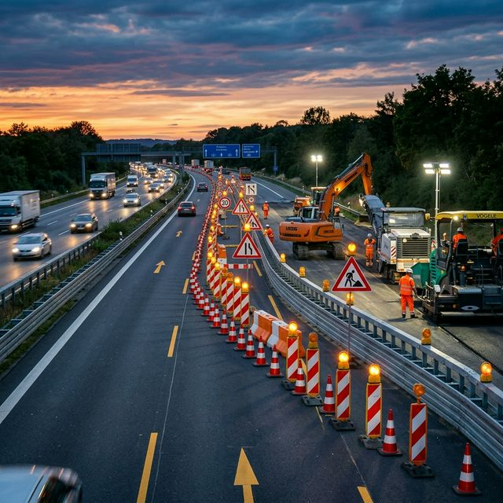

Verkehrsabsicherung in Ahlerstedt
professionell & RSA-konform
Verkehrsabsicherung in Ahlerstedt aus einer Hand: Verkehrszeichenpläne, behördliche Genehmigungen bei der Kreisverwaltung Stade und fachgerechte Umsetzung durch MVAS-geschultes Personal.
Verkehrsabsicherung in Ahlerstedt
Die Verkehrsabsicherung in Ahlerstedt umfasst alle Maßnahmen zur Sicherung von Arbeitsstellen im öffentlichen Straßenverkehr. Grundlage sind die RSA (Richtlinien für die Sicherung von Arbeitsstellen) und das MVAS.
Wir bieten Verkehrsabsicherung als Komplettservice in Ahlerstedt: Planung, Genehmigung bei der Kreisverwaltung Stade, Aufbau durch MVAS-geschultes Personal und regelmäßige Kontrollfahrten – Sie kümmern sich um nichts.
Mit unserem eigenen Fuhrpark und MVAS-geschultem Fachpersonal sind wir für jede Verkehrsabsicherung in Ahlerstedt gerüstet – von der temporären Gehwegsicherung bis zur langfristigen Großbaustelle.
Unsere Leistungen im Überblick
Verkehrsanordnungen
Beantragung und Koordination aller verkehrsrechtlichen Genehmigungen bei der Kreisverwaltung Stade.
Baustellenabsicherung
Komplette Sicherung Ihrer Baustelle in Ahlerstedt nach RSA – Beschilderung, Absperrung, Beleuchtung.
Verkehrszeichenpläne
Erstellung maßstabsgetreuer Verkehrszeichenpläne als Grundlage für die Genehmigung der Kreisverwaltung Stade.
Kontrollfahrten
Regelmäßige Überwachung und Wartung Ihrer Absicherung in Ahlerstedt mit sofortiger Mängelbeseitigung.
Individuelle Lösungen
Maßgeschneiderte Konzepte für Großbaustellen, Events und Sonderprojekte in Ahlerstedt.
Haltestellenabsicherung
Sichere Verlegung und Absicherung von Ersatzhaltestellen im ÖPNV-Bereich von Ahlerstedt.
Verkehrsabsicherung in Ahlerstedt für jeden Einsatzbereich
Ob kleine Gehwegabsicherung oder komplexe Straßenbaustelle in Ahlerstedt – wir haben die passende Lösung.
Baustellenabsicherung
Komplette Absicherung von Baustellen aller Art in Ahlerstedt – von Tiefbau bis Hochbau, RSA-konform und mit Verkehrszeichenplan.
Straßenbauarbeiten
Absicherung von Asphaltier- und Straßenbauarbeiten in Ahlerstedt mit Fahrbahneinengung, Überleitung und Umleitungsbeschilderung.
Versorgungsleitungen
Sicherung bei Verlegung und Reparatur von Strom-, Gas- und Wasserleitungen in Ahlerstedt mit minimaler Verkehrsbeeinträchtigung.
Gehweg- & Radwegsicherung
Sichere Führung von Fußgängern und Radfahrern um Arbeitsstellen in Ahlerstedt mit barrierefreien Zugängen.
Veranstaltungsabsicherung
Verkehrsabsicherung für Veranstaltungen, Feste und Märkte in Ahlerstedt – mit Sperrplänen und Umleitungskonzepten.
Nacht- & Wochenendarbeiten
Spezielle Beleuchtungskonzepte und reflektierende Absicherungen für Arbeiten bei Dunkelheit in Ahlerstedt.
So beauftragen Sie Ihre Verkehrsabsicherung in Ahlerstedt
Von der Anfrage bis zum Abbau – wir kümmern uns in Ahlerstedt um alles.
Projektdetails & Beratung
Beschreiben Sie uns Ihr Projekt in Ahlerstedt: Standort, Art der Arbeiten, Zeitraum und besondere Anforderungen. Wir beraten Sie zur optimalen Lösung.
Verkehrszeichenplan erstellen
Wir erstellen einen maßstabsgetreuen Verkehrszeichenplan nach RSA – individuell für die Gegebenheiten in Ahlerstedt.
Genehmigung einholen
Wir beantragen die verkehrsrechtliche Anordnung bei der Kreisverwaltung Stade und koordinieren alle behördlichen Abstimmungen.
Aufbau & Dokumentation
Unser MVAS-geschultes Team stellt alle Absicherungselemente in Ahlerstedt fachgerecht auf. Alles wird fotografisch dokumentiert.
Kontrolle & Abbau
Regelmäßige Kontrollfahrten sichern die Qualität. Nach Projektende bauen wir alles in Ahlerstedt rückstandslos ab.
Was kostet eine Verkehrsabsicherung in Ahlerstedt?
Was Sie für eine professionelle Verkehrsabsicherung in Ahlerstedt investieren, hängt von mehreren Faktoren ab. Wir kalkulieren transparent:
Auf- & Abbaukosten
Personalkosten für den fachgerechten Auf- und Abbau aller Absicherungselemente in Ahlerstedt.
Warnleuchten & Beleuchtung
LED-Warnleuchten und Baustellenbeleuchtung für Nachtabsicherungen in Ahlerstedt werden nach Bedarf berechnet.
Absperrungen & Beschilderung
Kosten für Absperrbaken, Verkehrszeichen und Leiteinrichtungen in Ahlerstedt. Individuell nach Projektgröße.
Verkehrszeichenplan
Erstellung des RSA-konformen Plans für Ihre Arbeitsstelle in Ahlerstedt. Komplexität variiert nach Straßenklasse.
Wir erstellen Ihnen gerne ein kostenloses und unverbindliches Angebot für Ahlerstedt – exakt zugeschnitten auf Ihre Anforderungen.
Häufig gestellte Fragen zur Verkehrsabsicherung in Ahlerstedt
Antworten auf die wichtigsten Fragen rund um die Verkehrsabsicherung in Ahlerstedt.
Welche Normen gelten für Verkehrsabsicherung in Ahlerstedt?
Die Absicherung in Ahlerstedt erfolgt nach den RSA und dem MVAS. Alle unsere Mitarbeiter sind entsprechend geschult und zertifiziert.
Übernehmen Sie auch Kontrollfahrten in Ahlerstedt?
Ja, regelmäßige Kontrollfahrten in Ahlerstedt sind fester Bestandteil unserer Leistung. Wir prüfen alle Elemente und beheben Mängel sofort vor Ort.
Sind Sie in Ahlerstedt und Umgebung tätig?
Ja, wir sind in Ahlerstedt und im gesamten Landkreis Stade tätig. Auch in Harsefeld, Fredenbeck, Bargstedt sind wir regelmäßig im Einsatz.
Was ist ein Verkehrszeichenplan und brauche ich einen in Ahlerstedt?
Ein Verkehrszeichenplan ist eine maßstabsgetreue Zeichnung aller Verkehrszeichen und Absperrungen an Ihrer Arbeitsstelle in Ahlerstedt. Er ist Voraussetzung für die Genehmigung der Kreisverwaltung Stade.
Welche Arten von Arbeitsstellen sichern Sie in Ahlerstedt ab?
Wir sichern alle Arten ab: Tiefbau, Straßenbau, Leitungsarbeiten, Gerüst- und Kranbaustellen, Gehwegabsicherungen, Veranstaltungen und mehr in Ahlerstedt.
Wie schnell können Sie in Ahlerstedt eine Baustelle absichern?
In dringenden Fällen sind wir in Ahlerstedt innerhalb von 24 Stunden einsatzbereit. Reguläre Absicherungen planen wir mit 5–10 Werktagen Vorlauf wegen der Genehmigung bei der Kreisverwaltung Stade.
Brauche ich in Ahlerstedt eine Genehmigung für Verkehrsabsicherung?
Ja, für jede Arbeitsstelle im öffentlichen Straßenraum von Ahlerstedt ist eine verkehrsrechtliche Anordnung der Kreisverwaltung Stade erforderlich. Wir beantragen diese für Sie.
Welche Leistungen umfasst Ihre Verkehrsabsicherung in Ahlerstedt?
Unsere Verkehrsabsicherung in Ahlerstedt umfasst: Verkehrszeichenplan-Erstellung, Beantragung der Anordnung bei der Kreisverwaltung Stade, Aufstellung aller Absicherungselemente sowie regelmäßige Kontrollfahrten.
Was kostet eine Verkehrsabsicherung in Ahlerstedt?
Die Kosten für eine Verkehrsabsicherung in Ahlerstedt variieren je nach Umfang. Einfache Gehwegabsicherungen starten bei ca. 150 Euro, komplexere Projekte werden individuell kalkuliert. Wir erstellen Ihnen gerne ein kostenloses Angebot.
Wie lange im Voraus muss ich in Ahlerstedt buchen?
Ideal sind 2–3 Wochen Vorlauf für Ahlerstedt, da die Kreisverwaltung Stade Bearbeitungszeit für die Anordnung benötigt. In Eilfällen bieten wir Express-Service an.
Verkehrsabsicherung in Ahlerstedt
jetzt anfragen
Teilen Sie uns die Details zu Ihrem Projekt in Ahlerstedt mit. Wir erstellen Ihnen umgehend ein individuelles Angebot.
04131 3942977
info@verkehrssicherung-adler.de
Verkehrsabsicherung in Ahlerstedt – Ihre Region, unser Einsatzgebiet
Ahlerstedt liegt im Landkreis Stade und ist über die umliegenden Verkehrsanbindungen gut erreichbar. Für die Verkehrsabsicherung in Ahlerstedt stimmen wir uns eng mit der Kreisverwaltung Stade ab und kennen die lokalen Besonderheiten und Anforderungen genau.
Verkehrsabsicherung auch in diesen Städten
Wir bieten Verkehrsabsicherung nicht nur in Ahlerstedt an. Entdecken Sie unseren Service in weiteren Städten der Region.